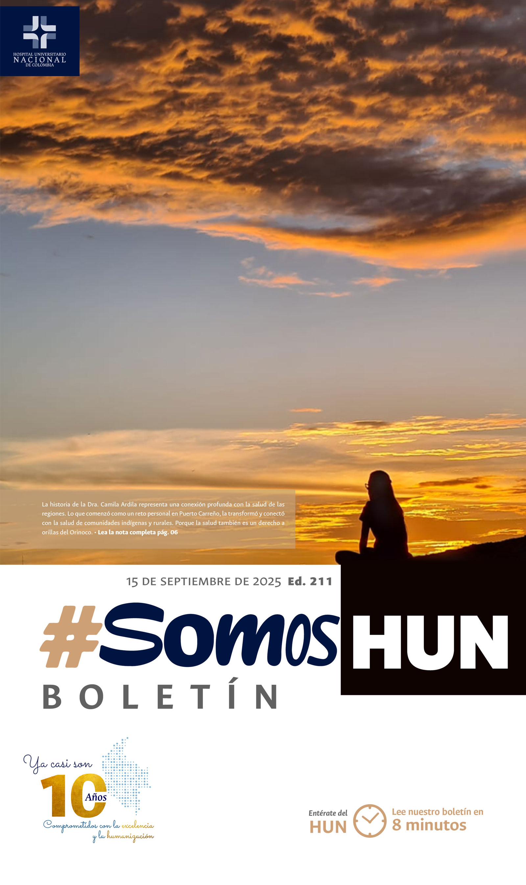
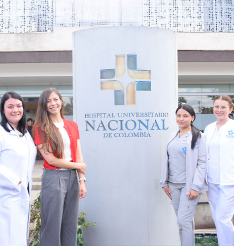
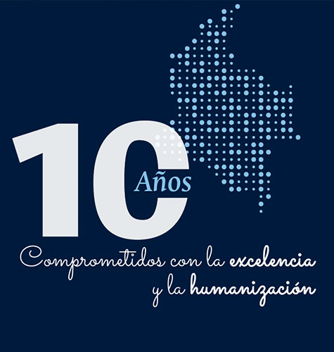
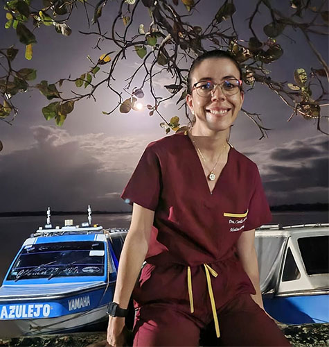
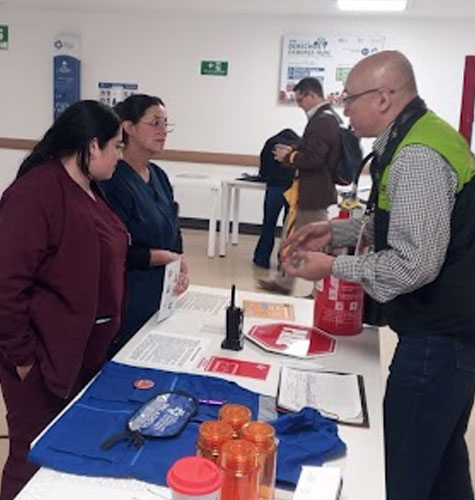
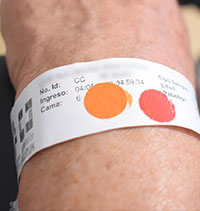
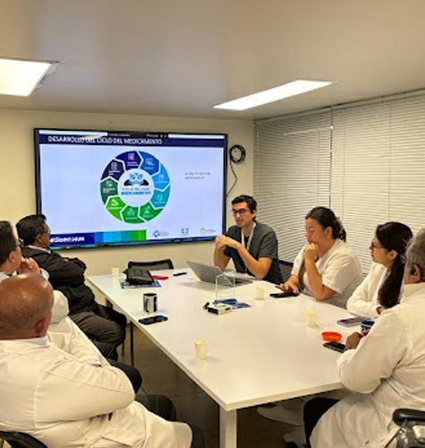

Ver todos los boletines
Arrancó el programa de Chequeo ejecutivo en el HUN
El Hospital Universitario Nacional de Colombia (HUN) amplía su portafolio de servicios con el lanzamiento del programa de chequeo médico para pacientes particulares, una apuesta estratégica que busca consolidarse como referente nacional en prevención. Este modelo no solo diversifica la oferta de la institución, sino que también fortalece su impacto en la salud pública al proyectarse hacia Bogotá y otras regiones del país.Leer más

10 Años, 10 Razones para Creer
El próximo 3 de diciembre de 2025, el Hospital Universitario Nacional de Colombia celebrará sus primeros 10 años de vida, una década en la que hemos cuidado, enseñado, investigado y acompañado a miles de pacientes y familias.Leer más

La médica de los indígenas
La primera vez que la Dra. Camila Ardila aterrizó en Puerto Carreño, creyó que no resistiría. El calor la envolvía como un muro invisible, las paredes de la casa fiscal se veían oxidadas, los colchones se desmoronaban y el ventilador parecía un sobreviviente de otra época. Lloró la primera semana, junto a su mejor amiga, planeando cómo regresar a Bogotá. Sin embargo, el dinero era escaso y la realidad ineludible: debía quedarse. No lo sabía entonces, pero aquel 13 de enero de 2016 estaba comenzando la historia que la marcaría como “la médica de los indígenas”, como la llaman en Bogotá sus colegas.Leer más
Hoy se publicó el ECBE: Atención de las personas adultas con incongruencia de género en el HUN.
Una herramienta clave para la atención a las personas con incongruencia de género que permite una atención integral y que está soportada en la mejor evidencia disponible.Leer más

Semana de la Seguridad y Salud en el Trabajo: Trabajar con bienestar, vivir mejor
Durante el mes de agosto se llevó a cabo la semana de la salud y seguridad en el trabajo, un espacio diseñado para promover los hábitos y estilos de vida saludable en el entorno laboral.Leer más

Seguridad del Paciente, un compromiso desde el inicio de la atención.
En el HUN la seguridad del paciente es una prioridad. Así lo afirma Katherine Álvarez, enfermera de Atención Segura, quien explica que al ingreso de cada paciente se realiza un proceso de identificación de riesgos. “Evaluamos el riesgo de caídas, de lesiones en la piel, complicaciones broncopulmonares y alergias. Esta información se registra en la historia clínica y en los elementos de identificación del paciente para prevenir eventos adversos”, señala.Leer más

Tener reuniones efectivas es una garantía de optimización del tiempo y mejora de resultados.
Los equipos del hospital son mecanismos de comunicación muy efectivos, han movilizado el mejoramiento desde el interior de los procesos hacia la eficiencia y la visión estratégica, con esta estructura buscamos que cada minuto de reunión tenga un propósito y que los resultados se traduzcan en acciones que fortalezcan nuestra misión de ofrecer atención segura y humanizada.Leer más